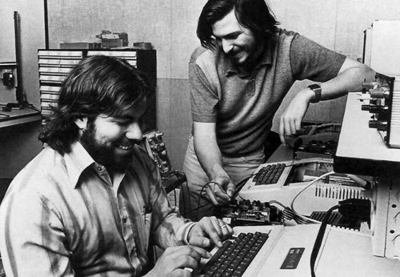

Chương 2

hi còn học ở lớp của thầy McCollum, Jobs kết bạn với một sinh viên tốt nghiệp đại học tên là Stephen Wozniak, học sinh cưng của thầy và cũng là một huyền thoại của trường vì tài năng xuất chúng của cậu. Em trai của Stephen từng tham gia đội bơi lội với Jobs. Còn Stephen thì lớn hơn Jobs khoảng năm tuổi nhưng kiến thức về điện tử thì vượt xa ông. Tuy nhiên, xét về cả mặt tình cảm lẫn giao tế xã hội thì Stephen vẫn là một cậu bé trung học say mê công nghệ đến nhàm chán.

Ảnh Jobs và Wozniak trong ga-ra, năm 1976
Giống như Jobs, Wozniak học được rất nhiều thứ từ người cha của mình. Nhưng những thứ họ học được lại hoàn toàn khác nhau. Paul Jobs bỏ học từ trung học và bắt đầu biết cách kiếm được những khoản tiền kha khá bằng việc trao đổi mua bán các bộ phận cơ khí khi làm công việc của người thợ sửa chữa ô tô. Còn Francis Wozniak, cha của Stephen, thường được biết đến với cái tên Jerry thì lại là sinh viên xuất sắc tốt nghiệp ngành kỹ thuật của trường Kỹ thuật California (Cal Tech) danh tiếng. Khi đi học, cha của Stephen cũng từng tham gia đội bóng đá của trường ở vị trí tiền vệ và sau này trở thành nhà khoa học về tên lửa tại Lockheed, ông coi trọng ngành khoa học kỹ thuật và coi thường những người làm kinh doanh, marketing và bán hàng. “Tôi nhớ có lần cha nói với tôi rằng nghiên cứu khoa học và chế tạo là tầng lớp danh giá và quan trọng nhất trong xã hội.
Chính khoa học mới có thể đưa xã hội tiến lên một nấc thang mới”. Steve Wozniak kể cho tôi nghe như vậy.
Một trong những ấn tượng đầu tiên của Steve Wozniak về công việc của người cha đó là lần đến chỗ làm việc của cha vào một ngày cuối tuần và được ông đưa cho xem những linh kiện điện tử. Cha của Woz nói “Hãy để chúng xuống bàn và chúng ta sẽ cùng khám phá nó”. Steve Wozniak quan sát một cách thích thú khi người cha cố gắng làm cho màn hình hiển thị những đường sóng như một minh chứng rằng một trong những thiết kế vi mạch của ông hoạt động tốt.
“Tôi cảm nhận rằng, dù cha có đang làm gì đi nữa thì nó cũng rất quan trọng và rất tốt”. Sau đó, Woz hỏi cha mình về hệ thống điện trở và bóng bán dẫn xung quanh nhà. Cha ông đã dùng một chiếc bảng đen vẽ các sơ đồ giải thích cho Steve, “ông giải thích cho tôi cách thức hoạt động của điện trở bắt đầu từ việc giải thích về nguyên lý giữa nguyên tử và các electron. Và bởi vì tôi chỉ là một đứa trẻ học lớp hai nên ông đã chọn cách vẽ hình minh họa thay cho lời giải thích bằng những công thức phức tạp”.
Ngoài kiến thức về kỹ thuật, cha của Woz còn dạy cho ông nhiều điều mà sau này chúng ăn sâu vào tính cách trẻ con và đôi chút vụng về trong giao tiếp xã hội của ông, đó là: Không bao giờ
được nói dối. “Cha tôi thích sự trung thực. Sự trung thực gần như tuyệt đối. Đó là bài học tốt đẹp nhất mà cha đã dạy cho tôi. Tôi không bao giờ nói dối bất kỳ ai, thậm chí cho tới tận bây giờ.” (Lần duy nhất Woz nói dối là do yêu cầu của một trò đùa vô hại). Ngoài ra, cha của Woz còn truyền cho ông tư tưởng mang tính ác cảm với tham vọng, điều khiến Woz đối lập với Jobs. Woz đã biểu hiện rõ sự khác biệt giữa hai người trong một sự kiện ra mắt một sản phẩm của Apple năm 2010, bốn mươi năm kể từ khi họ gặp nhau. Woz phát biểu “Cha tôi đã từng nói rằng „Con luôn đặt mình ở Vị trí trung bình". Quả thật, tôi không muốn ở vị trí cao như Jobs. Cha tôi là một kỹ sư thuần túy và đó cũng là những gì tôi mong muốn, ở mức độ nào đó, tôi thấy mình không tự tin để có thể trở thành một lãnh đạo doanh nghiệp, người luôn phải chịu trách nhiệm đưa ra những quyết định kinh doanh cho toàn công ty như Jobs”.
Đến năm lớp bốn thì Woz gần như trở thành một “cậu bé của công nghệ”. Việc làm quen sản phẩm bóng bán dẫn với ông thậm chí còn dễ hơn nhiều so với việc tiếp xúc và bắt chuyện với một bạn nữ. Woz có dáng mập mạp, lưng khom gù của một người suốt ngày chỉ biết khom mình trên những bảng vi mạch, ở độ tuổi mà Jobs vẫn đang còn thắc mắc về hiện tượng chiếc micro carbon mà cha cậu không thể giải thích thỏa đáng cho cậu thì Woz đã sử dụng bóng bán dẫn để xây dựng hệ thống kết nối liên lạc bao gồm có bộ khuếch đại âm thanh, rơ le ngắt, đèn và thiết bị tạo độ
rung âm thanh như chuông nối các căn phòng của sáu đứa trẻ từ sáu ngôi nhà khác nhau trong khu vực. Và ở độ tuổi Jobs đang mải mê với các tác phẩm chế tạo từ bộ dụng cụ Heathkits của mình thì Woz đã lắp ráp hệ thống máy phát và nhận tín hiệu từ Hallicrafters, những chiếc radio “hoành tráng” nhất thời điểm đó.
Woz dành rất nhiều thời gian ở nhà để đọc những bài báo về điện tử của cha mình và thực sự bị mê hoặc bởi những câu chuyện kể về những chiếc máy tính đời mới nhất như ENIAC(1). Bởi vì đại số luận lý gần như là kiến thức nằm lòng của Woz nên ông vô cùng ngạc nhiên khi biết rằng một chiếc máy vi tính được tạo ra rất đơn giản chứ không phải quá phức tạp. Đến năm lớp tám, Woz đã tự làm được một chiếc máy tính từ một trăm chiếc bóng bán dẫn, hai trăm đi-ốt và hai trăm vi điện trở trên mười bảng vi mạch. Và chính phát minh này đã mang lại giải nhất trong một cuộc thi khu vực được Lực lượng Không quân (the Air Force) tổ chức. Ông đã đánh bại cả những đối thủ khác lớn tuổi hơn đang học lớp mười hai.
Càng ngày, Woz càng cảm thấy lạc lõng hơn vì ở tuổi đó, các cậu bạn cùng tuổi Woz bắt đầu biết hẹn hò với bạn gái và tiệc tùng, những thứ mà Woz còn thấy phức tạp hơn cả việc thiết kế ra các bộ mạch điện tử. ông tâm sự, “Từ chỗ được nhiều người biết đến, sống hòa đồng, đi xe đạp và làm những việc như hầu hết mọi người vẫn làm, tự nhiên lúc đó, tôi cảm giác như bị xã hội đào thải. Dường như trong một quãng thời gian dài, tôi không nói chuyện với bất kỳ ai”, ông tìm lối thoát cho mình bằng các trò nghịch ngợm của tuổi thiếu niên. Lên lớp mười hai, ông chế tạo ra một chiếc máy đếm nhịp điện tử - một kiểu máy tạo ra tiếng tíc - tíc - tíc dùng để đếm thời gian trong lớp học nhạc và nhận ra nó kêu như thể một quả bom hẹn giờ. Vì vậy, cậu học sinh Woz lúc đó đã tháo nhãn vài bình ắc quy, ghép chúng lại với nhau và gắn vào một ổ khóa của trường. Chiếc máy được đặt chế độ kêu nhanh hơn khi chiếc khóa được mở ra hệt như một quả bom đặt chế độ hẹn giờ. Ngay sau đó, ông được gọi lên phòng của ban giám hiệu. Ban đầu, ông nghĩ có lẽ là vì ông vừa mới đạt giải nhất toán học cấp trường. Tuy nhiên, sự thật là ông phải gặp cảnh sát. Thầy hiệu trưởng đã được thông báo ngay sau khi cảnh sát phát hiện ra thiết bị đó và ông này đã dũng cảm ôm chặt “quả bom” đó chạy ra sân bóng và gỡ “kíp nổ”. Woz đã cố gắng nhưng không thể nhịn cười khi nghe thấy điều đó. Cuối cùng, ông bị đưa đến trung tâm giáo dưỡng trẻ vị thành niên và ở đó một đêm. Đó thật sự là một trải nghiệm không thể nào quên. Tại đây, ông đã dạy những “người bạn đồng cảnh ngộ” của mình cách cắt dây điện dẫn đến những chiếc quạt trần và nối chúng với các song sắt khiến cho những ai chạm vào sẽ bị giật.
Việc những đứa trẻ khác đã há hốc miệng vì kinh ngạc dường như là một “huy hiệu vinh dự” với Woz. ông cảm thấy tự hào vì mình là một kỹ sư phần cứng, đồng nghĩa với việc hành động gây sốc cho mọi người dường như diễn ra như cơm bữa. Một lần, Woz đã phát minh ra một trò chơi “con quay”, và bốn người chơi đặt ngón tay cái của họ vào cùng một điểm. Nếu ai để bóng rơi thì sẽ bị điện giật. Và ông ghi nhận rằng “Với những gã làm phần cứng thì trò này chỉ là chuyện nhỏ, nhưng mấy gã thiết kế phần mềm đúng là những „con gà"”.
Trong suốt năm cuối trung học, Woz cũng đi làm bán thời gian ở Sylvania và lần đầu tiên trong đời ông có cơ hội làm việc với máy vi tính. Ông tự học ngôn ngữ lập trình biên dịch FORTRAN từ một cuốn sách và đọc quyển giới thiệu về hầu hết các hệ thống vận hành đang có tại thời điểm đó, bắt đầu với thiết bị điện tử PDP-8. Sau đó ông nghiên cứu các thông số kỹ thuật của những bộ vi mạch {microchip) mới nhất lúc đó và cố gắng thiết kế lại những chiếc máy vi tính bằng cách sử dụng những linh kiện mới hơn. Thách thức ông tự đặt ra cho mình là tái tạo lại những thiết kế trên với việc sử dụng số linh kiện ít nhất có thể. Mỗi đêm, ông lại cố gắng nâng cấp bản vẽ của mình tốt hơn so với bản đêm trước. Và khi kết thúc năm học cuối, ông đã trở thành chuyên gia điện tử nhưng ông chưa bao giờ kể cho những người bạn của mình, ông nói “Thời điểm đó, tôi đã có thể thiết kế được những chiếc máy vi tính với số chip bằng một nửa so với con số mà một công ty chuyên nghiệp sử dụng trong các thiết kế của họ. Nhưng tất nhiên, nó mới chỉ là trên giấy”. Nói cho cùng, những cậu ấm cô chiêu ở lứa tuổi mười bảy ấy rồi cũng dễ dàng tìm được niềm vui thú của chính mình bằng trăm ngàn cách khác nhau.
Vào một buổi cuối tuần của kỳ nghỉ Lễ tạ ơn năm cuối trung học, Woz đã tới thăm đại học Colorado. Trường đóng cửa vào dịp nghỉ lễ nhưng ông vẫn tìm được một sinh viên kỹ thuật và nhờ người đó đưa mình đi thăm phòng thí nghiệm ở đây. ông năn nỉ cha cho theo học tại đây mặc dù học phí trái tuyến (ngoài địa phận bang nơi mình sinh sống) rất cao và gia đình ông không dễ kham được. Họ đành phải thỏa thuận rằng: Ông sẽ được cho theo học tại đây như ông muốn nhưng chỉ
trong một năm rồi sau đó phải chuyển về trường công De Anza theo đúng tuyến. Sau khi chuyển tới Colorado vào kỳ nhập học mùa thu năm 1969, Woz lại dành quá nhiều thời gian vào những trò nghịch ngợm vô bổ (ví như việc tạo ra hàng loạt tập tin với nội dung chửi bới Nixon “Fuck Nixon”). Đó là lý do ông bị đánh trượt hai lần trong thời gian học tại đây và được chuyển sang giai đoạn quản chế và thử thách. Không chỉ dừng lại ở đó, ông còn lập ra một chương trình tính toán dãy số Fibonacci(^) khiến cho các máy tính của trường gần như bị “thiêu cháy” vì thế trường đã bắt ông phải hoàn trả cho những thiệt hại gây ra. Tất cả những “sự cố” trên đã giúp ông giữ đúng thỏa thuận với cha mẹ mình và chuyển sang theo học ở trường De Anza.
Sau một năm học khá dễ thở ở De Anza, Woz dùng thời gian rảnh của mình để kiếm tiền.
Ông vào làm việc tại một công ty sản xuất máy tính cho Cục quản lý phương tiện mô tô California và một đồng nghiệp đã có một lời đề nghị khá thú vị, đó là ông ta sẽ cung cấp một số con chip không dùng đến để Woz chế tạo ra một trong số những chiếc máy vi tính mà ông đã nghiên cứu và phác thảo trên giấy. Wozniak quyết định sử dụng càng ít chip càng tốt vừa như là một sự thử thách với chính mình vừa vì ông không muốn lợi dụng sự hào phóng của người bạn đồng nghiệp.
Phần lớn công việc của Woz được thực hiện tại nhà để xe của một người bạn gần nhà tên là Bill Fernandez, người vẫn đang học trung học tại trường Homestead. Để củng cố thêm quyết tâm, họ uống rất nhiều soda kem Cragmont, tự đạp xe xuống Sunnyvale Safeway để trả lại chai, nhận lại tiền đặt cọc và mua tiếp. Woz nói thêm rằng “Đó cũng là lý do vì sao chúng tôi gọi chúng là những chiếc „máy vi tính Soda kem", về cơ bản nó là một chiếc máy tính có khả năng nhân những con số được nhập vào thông qua một tập các công tắc và hiển thị kết quả dưới dạng mã nhị phân bằng những bóng đèn nhỏ.
Khi công việc hoàn thành, Fernandez nói với Wozniak rằng ông nên gặp một người đồng môn của Fernandez ở trường trung học Homestead. “Cậu ấy tên là Steve, cũng thích thực hiện những trò nghịch ngợm như cậu và cũng đam mê chế tạo những thiết bị điện tử như cậu”. Đó có thể được coi là cuộc gặp gỡ định mệnh trong một nhà để xe ở thung lũng Silicon, giống như cuộc gặp gỡ giữa Hewlett và Packards trước đó ba mươi hai năm. Woz kể rằng “Jobs và tôi ngồi ở vỉa hè trước nhà của Bill rất lâu chỉ để tán phét, chủ yếu là về những trò nghịch ngợm của hai đứa và về những thiết kế điện tử mà chúng tôi đã sáng tạo ra. Chúng tôi có rất nhiều điểm chung. Thường thì, hầu như tôi không thể giải thích cho mọi người về những thiết kế của mình nhưng với Jobs ngược lại, cậu ấy hiểu nó ngay tức khắc. Và tôi thích cậu ấy. Cậu ấy là một người “khẳng khiu” nhưng rất dẻo dai và tràn đầy năng lượng”. Còn Jobs thì nhận định về người bạn của mình như sau: “Woz là người đầu tiên trong số những người tôi từng gặp hiểu biết về điện tử nhiều hơn tôi. Tôi thích anh ấy ngay lập tức. Trông tôi già dặn hơn tuổi một chút, còn anh ấy lại trẻ con hơn tuổi một chút, vì vậy, giữa chúng tôi hầu như không có sự chênh lệch lớn. Woz rất thông minh nhưng về mặt tâm lý tình cảm, anh ấy chỉ như bằng tuổi tôi”.
Bên cạnh sở thích về máy tính, chúng tôi còn có điểm chung là niềm đam mê âm nhạc. “Đó là quãng thời gian tuyệt vời cho tình yêu âm nhạc, giống như bạn đang sống trong thời đại khi mà Beethoven và Mozart còn sống. Thật sự, mọi người thường có những so sánh hồi tưởng như vậy. Đương nhiên, Woz và tôi cũng chìm đắm trong đó”. Jobs nhớ lại. Cụ thể là Stephen đã khơi dậy trong Jobs về một thời hoàng kim của Bob Dylan. “Chúng tôi đã tìm kiếm người gửi bản tin về Bob Dylan ở Santa Cruz. Dylan ghi âm tất cả những buổi biểu diễn của mình nhưng những người làm việc cho ông lại thiếu cẩn trọng vì thế nên rất nhanh chóng, những cuốn băng này được sao chép lậu và lan tràn khắp nơi. Và dĩ nhiên là anh chàng viết bản tin kia có tất cả chúng,” Jobs nói.
Việc săn lùng những cuốn băng của Dylan không lâu đã trở thành một phi vụ cộng tác của cả hai. “Hai chúng tôi sẵn sàng rong ruổi qua San Joe và Berkely, dò hỏi về những bản thu lậu chương trình của Dylan và thu lượm chúng. Chúng tôi mua những quyển nhạc có lời bài hát của Dylan và lẩm nhẩm tới tận đêm khuya. Ngôn từ trong những bài hát của Dylan có khả năng tác động mạnh tới suy nghĩ sáng tạo của con người”, Woz nói với tôi. Và Jobs tiếp lời, “Tôi có hơn một trăm giờ thu âm âm nhạc của Dylan, có cả từng buổi diễn trong các chuyến lưu diễn "65 và "66”(4). Cả hai người họ đều chọn mua những chiếc máy cassets TEAC có hai cửa băng. Woz nói “Tôi sẽ sử dụng máy thu của tôi ở tốc độ chậm để thu được nhiều bản nhạc hơn trong một cái băng.
Jobs thì nói “Thay vì sử dụng những chiếc loa to, tôi mua một đôi tai nghe ( headphones) khá đẹp để có thể nằm xuống giường và nghe nhạc hàng giờ đồng hồ”.
Jobs đã thành lập một câu lạc bộ ở trường trung học Homestead, nơi luôn diễn ra các buổi trình diễn kết hợp giữa âm nhạc và ánh sáng và cũng để thực hiện những trò nghịch ngợm của ông.
(Một lần, họ đã dính chiếc ghế toilet sơn vàng lên một chậu hoa). Câu lạc bộ đó được đặt tên là Buck Fry, một trò chơi chữ trên quý danh của thầy hiệu trưởng. Woz và bạn mình. Alien Baum, mặc dù đã tốt nghiệp nhưng vẫn tham gia “hiệp lực” với Jobs, lúc đó đang học lớp mười một, để tạo ra một sự kiện chia tay với những học sinh cuối cấp. Xuất hiện ở khuôn viên trường Homestead bốn mươi năm sau, Jobs đã dừng lại và chỉ cho tôi nơi đã diễn ra hành động phiêu lưu thời đó của ông. “ông nhìn thấy ban công đằng kia không? Đó chính là nơi ngày xưa chúng tôi đã treo một cái băng rôn - một trò nằm trong số những trò nghịch ngợm của chúng tôi”. Baum nhuộm hai màu đặc trưng của trường là xanh lá cây và trắng trên một tấm ga trải giường lớn, mặt trước có vẽ một bàn tay lớn giơ ngón giữa lên chào. Chính người mẹ gốc Do Thái xinh đẹp của Baum là người đã giúp họ vẽ nó, đồng thời cũng chỉ cho họ cách tạo bóng và đường viền để sao trông giống thật nhất. Bà cười khúc khích khi nhắc lại chuyện đó với tôi “Tôi biết nó là cái gì”. Họ còn thiết kế một hệ thống ròng rọc và dây thừng để có thể hạ thấp nhanh chóng khi các lớp học sinh tốt nghiệp diễu hành và đặt cho nó một cái tên là “SWAB JOB”, những ký tự đầu trong tên của Wozniak và Baum kết hợp với tên của Jobs. Trò nghịch này trở thành một câu chuyện truyền miệng trong trường và Jobs bị đình chỉ học một lần nữa.
Có một trò nghịch ngợm khác liên quan đến thiết bị bỏ túi có khả năng phát ra sóng Tivi mà Wozniak chế tạo ra. ông mang nó đến phòng sinh hoạt chung nào đó, như ở trong ký túc xá, nơi rất nhiều người tụ tập xem truyền hình và bí mật nhấn nút kích hoạt thiết bị khiến cho màn hình trở nên mờ và nhiễu. Khi ai đó đứng dậy và đập đập vào thùng tivi, ông lại nhả nút bấm ra và hình ảnh lại rõ nét trở lại. Một khi ông đã khiến cho những “khán giả truyền hình” đứng lên đứng xuống theo ý mình mà không một chút nghi ngờ, ông sẽ khiến mọi thứ phức tạp hơn. Ông sẽ giữ cho hình ảnh bị nhiễu cho đến khi ai đó chạm vào ăngten. Cuối cùng ông lại khiến cho mọi người nghĩ rằng hoặc họ phải giữ cần ăng ten trong tư thế co một chân, hoặc phải đập vào mặt trên của tủ ti vi để giải quyết vấn đề. Nhiều năm sau, trong một buổi thuyết trình, Jobs gặp rắc rối với việc cho chạy một đoạn băng video và ông đã chuyển hướng nói chuyện bằng việc thuật lại trò nghịch ngợm mà họ đã làm với thiết bị này một cách hứng thú: “Woz để nó ở trong túi và chúng tôi đi vào một ký túc xá, nơi mọi người đang cùng xem phim, như StarTrek(5) chẳng hạn. Woz vặn nút thiết bị gây nhiễu sóng và ai đó sẽ phải đứng lên để chỉnh chiếc ti vi. Cứ khi nào họ đứng lên chữa cái tivi thì Woz tắt thiết bị nhưng ngay khi có họ quay lại chỗ ngồi thì ông lại bật nó lên, cứ thế lặp đi lặp lại như vậy. Cứ khoảng năm phút một lần thì lại có một người trở thành nạn nhân của trò đùa tinh quái này”.
Blue Box - Hộp quay số điện thoại
Và sự kết hợp cuối cùng giữa điện tử và những trò chơi “ngông” của bộ đôi này, đồng thời cũng là hành động phiêu lưu giúp khởi xướng ra Apple, diễn ra vào một chiều chủ nhật khi Wozniak đọc được một bài báo trên tạp chí Esquire mà mẹ cậu để trên bàn ăn. Lúc đó là tháng 9 năm 1971 và Woz đang định hôm sau sẽ nhập học tại Berkely, trường đại học thứ ba của ông. Bài báo có tựa đề “Bí mật của „chiếc hộp xanh" nhỏ bé”, được viết bởi Ron Rosenbaum, nói về Blue.
Câu chuyện mô tả cách mà những kẻ tin tặc xâm nhập vào hệ thống và gọi điện đường dài miễn phí bằng cách dùng bản sao mô phỏng âm thanh truyền tín hiệu trên hệ thống mạng AT&T. Wozniak nói rằng “Đọc được nửa bài báo thì tôi phải nhấc máy gọi luôn cho người bạn chí cốt của tôi là Steve Jobs và cùng anh ấy đọc nốt bài báo dài này. Wozniak hiểu rằng Jobs, mặc dù bận rộn với việc chuẩn bị cho năm học cuối cấp, vẫn là một trong số hiếm hoi người có thể chia sẻ được sự phấn khích của ông lúc đó.
Người anh hùng được nhắc tới trong bài báo đó tên là John Draper, một tin tặc (hacker) được biết đến biệt danh Captain Crunch, trước đó đã khám phá ra rằng những âm thanh phát ra từ chiếc còi đồ chơi kết hợp cùng với ngũ cốc ăn sáng giống y hệt âm điệu 2600 Hertz khi hệ thống tín hiệu mạng điện thoại báo chuyển hướng cuộc gọi. Chính việc này khiến cho hệ thống có thể bị xâm nhập để thực hiện những cuộc gọi đường dài mà không phải trả thêm bất cứ một khoản phí nào.
Bài báo cũng tiết lộ rằng những âm điệu khác được dùng để truyền tín hiệu cuộc gọi có thể tìm thấy trong những tài liệu trên tạp chí Hệ thống kỹ thuật của Bell, những tài liệu mà AT&T đã phải yêu cầu thư viện gỡ bỏ khỏi giá sách ngay lập tức.
Ngay khi nhận được cuộc gọi từ Wozniak vào chiều chủ nhật,Jobs biết rằng họ phải bắt tay nghiên cứu những tạp chí kỹ thuật này ngay lập tức. Job kể rằng “Woz đã đón tôi chỉ vài phút sau đó và chúng tôi đi ngay đến thư viện ở SLAC ( The Stanford Linear Accelerator Center - trung tâm Gia số tuyến tính Stanford) để tìm kiếm chúng”. Hôm đó là chủ nhật nên thư viện đóng cửa nhưng họ biết cách đột nhập qua một cánh cửa hiếm khi khóa. Jobs tiếp tục: “Tôi nhớ chúng tôi đã xới tung đống sách trong thư viện và chính Woz là người đã tìm ra tờ báo đó. Quỷ thần ơi, chính là nó, chúng tôi đã thấy nó. Chúng tôi không kìm lại được mà liên tục thốt lên „Quỷ thần ơi, nó là sự thật.
Nó là sự thật". Tất cả đều có ở trong tài liệu này, âm điệu, tân sô.
Wozniak đi ngay đến Sunnyvale Electronics để kịp mua những linh kiện lắp đặt một chiếc máy phát âm thanh dạng tín hiệu tuần tự (analog) trước khi nó đóng cửa vào buổi tối. Jobs đã từng làm một cái máy đếm tần số khi tham gia vào Câu lạc bộ những nhà khám phá HP và họ đã sử dụng chúng để hiệu chuẩn những âm điệu mong muốn. Với một lần quay số, họ có thể có bản sao mô phỏng và ghi lại bằng những âm thanh đúng như mô tả ở bài báo. Đến nửa đêm thì họ đã sẵn sàng để thử nghiệm nó. Nhưng không may là bộ dao động mà họ sử dụng không đủ ổn định để mô phỏng lại những âm thanh nhỏ một cách chính xác giúp có thể “chơi khăm” công ty viễn thông.
Woz nói “Chúng tôi đã nhận ra sự thiếu ổn định khi sử dụng máy đếm tần số của Jobs và cuối cùng thì chúng tôi đã không thể thực hiện được ý định của mình. Sáng hôm sau tôi phải đến Berkeley để nhập học, vì vậy chúng tôi quyết định tôi sẽ tập trung chế tạo ra một phiên bản kỹ thuật số ngay khi tôi đến đó”.
Trước đó, chưa từng có ai chế tạo phiên bản điện tử của Blue Box nhưng Woz đã dám liều lĩnh làm nó.Với sự giúp đỡ của một sinh viên âm nhạc ở ký túc xá, người có âm vực hoàn hảo, Woz đã sử dụng đi-ốt và bóng bán đẫn từ Radio Shack để làm ra Blue Box điện tử trước Lễ tạ ơn. ông nói rằng “Tôi chưa bao giờ thiết kế ra một mạch điện tử nào đáng tự hào hơn. Đến tận bây giờ tôi vẫn nghĩ đúng là không thể tin được”.
Một đêm, Wozniak đã lái xe từ Berkely xuống nhà Jobs để thử vận hành nó. Họ cố gắng gọi điện cho bác của Wozniak ở Los Angeles nhưng họ sai số. Nhưng chẳng hề hấn gì, điều quan trọng là cuối cùng thiết bị của họ đã hoạt động.Wozniak đã hét lên sung sướng “Xin chào, chúng tôi đang gọi cho bạn miễn phí! Chúng tôi đang gọi cho bạn miễn phí!”. Người ở đầu dây bên kia lúng túng và khó chịu. Jobs chen thêm “Chúng tôi đang gọi cho bạn từ California! Từ California!
Bằng một chiếc Blue Box”. Điều này có thể cũng chẳng có ý nghĩa gì với người đàn ông đó vì ông ta cũng ở California.
Đầu tiên, Blue Box được sử dụng để phục vụ những trò nghịch ngợm của hai người. Táo bạo nhất là khi họ dám gọi điện đến tòa thánh Vatican, Wozniak giả là Henry Kissinger và bày tỏ mong muốn được nói chuyện với Đức thánh cha. Ông luyến láy âm điệu sao cho giống tiếng của Henry Kissinger “Chúng tôi có một hội nghị thượng đỉnh tại Moscow và chúng tôi cần nói chuyện với Đức thánh cha” (\/e are at de summit meeting in Moscow, and ve need to talk to de pope). Ông được trả lời rằng lúc đó là năm rưỡi sáng và Đức thánh cha đang ngủ. Khi ông gọi lại, ông gặp một vị giám mục, người được cho là sẽ làm công việc của phiên dịch viên. Nhưng thật sự họ không bao giờ chuyển máy cho Đức thánh cha. Jobs nói “Họ nhận ra Woz không phải là Henry Kissinger vì lúc đó, chúng tôi đang gọi từ một bốt điện thoại công cộng”.
Sau đó, họ đã đi đến một quyết định quan trọng đánh dấu một thành công hữu hình trong mối quan hệ hợp tác của họ, đó là Jobs có ý tưởng sẽ biến Blue Box, không còn là thứ đồ chơi tiêu khiển của hai người nữa mà họ sẽ sản xuất và bán chúng. “Tôi thu thập tất cả các linh kiện cần dùng như vỏ thiết bị, nguồn điện, phím bấm và tính toán ra giá cả rồi chúng tôi sẽ bán chúng”, Jobs kể lại công việc của mình như một điềm báo trước về vai trò của ông khi họ thành lập ra Apple.
Sản phẩm hoàn thiện có kích cỡ bằng hai sấp bài. Giá mua linh kiện khoảng 40 đô-la và họ sẽ bán thành phẩm với giá 150 đô-la.
Bắt chước những “tin tặc viễn thông” nổi tiếng như Captain Crunch, Jobs và Woz cũng tự phong cho mình những tên hiệu riêng. Woz trở thành “Berkely Blue” còn Jobs là “Oaf Tobark”.
Họ mang thiết bị của mình đến ký túc xá của trường đại học và trình diễn cho mọi người xem bằng cách gắn nó vào một chiếc điện thoại có loa ngoài. Khi những vị khách hàng tiềm năng chăm chú quan sát, họ sẽ thực hiện cuộc gọi cho khách sạn hạng sang Ritz ở London hay gọi tới một dịch vụ nghe kể chuyện cười ở Australia. Jobs nhớ rằng “Chúng tôi đã làm một trăm hoặc hơn chiếc Blue Box và bán gần hết chúng”.
Tuy nhiên cuộc chơi và lợi nhuận đã kết thúc trong một tiệm bánh pizza ở Sunnyvale. Jobs và Wozniak đang trên đường lái xe tới Berkely với một chiếc Blue Box họ mới hoàn thành. Jobs cần tiền và rất hăm hở để bán nó nên ông chia sẻ thông tin về chiếc máy với mấy gã ngồi bàn kế bên. Họ thật sự rất thích thú, vì vậy, Jobs đi tới một bốt điện thoại và trình diễn nó bằng một cuộc gọi đến Chicago. Những vị khách hàng triển vọng này nói họ cần ra chỗ ô tô để lấy tiền. “Vì vậy, chúng tôi đi với họ ra chỗ để xe, cầm theo chiếc Blue Box. Một gã vào trong ô tô, cúi xuống ghế sau và rút ra một khẩu súng”, Jobs kể lại. Chưa bao giờ trong đời Jobs lại bị chĩa súng gần như vậy nên ông hoảng sợ tột độ. “Anh ta dí súng vào bụng tôi và nói „Đưa cái thiết bị kia đây, người anh em". Tôi bắt đầu chạy đua với ý nghĩ chiếc cửa xe đang mở, tôi có thể đóng sập nó lại, đập vào chân hắn ta và chúng tôi có thể chạy thoát. Nhưng cũng có xác suất cao là hắn ta sẽ bắn tôi. Vì vậy, tôi quyết định đưa chiếc Blue Box cho hắn một cách từ từ, cẩn thận”. Đây quả là một kiểu cướp lạ lùng trên thế giới. Tên cướp Blue Box của Jobs đã đưa số điện thoại của hắn và nói sẽ cố gắng kiếm tiền trả nếu hắn thấy thiết bị hoạt động tốt. Sau đó, khi Jobs gọi điện cho hắn, hắn nói vẫn chưa tìm ra được cách sử dụng nó. Vì vậy, Jobs đã khéo léo thuyết phục hắn gặp ông và Wozniak ở một nơi công cộng. Nhưng cuối cùng họ lại quyết định không chạm trán với tên cướp có súng kia lần nữa, thậm chí ngay cả khi họ có cơ hội để lấy lại 150 đô-la kia.
Việc hợp tác này đã mở đường cho những “cuộc phiêu lưu” ở mức độ cao hơn nhiều của Jobs và Woz sau này. Jobs đã phải thừa nhận rằng “Nếu không có phi vụ Blue Box, sẽ không có Apple ngày nay. Tôi chắc chắn 100% về điều này. Woz và tôi đã học được cách phối hợp làm việc với nhau và hơn cả là chúng tôi cảm thấy tự tin rằng chúng tôi có thể giải quyết các vấn đề kỹ thuật và tạo ra những sản phẩm thực sự có thể đưa vào sản xuất và phân phối”. Họ đã sáng tạo ra một thiết bị với bảng vi mạch nhỏ có thể kiểm soát được một hệ cơ sở hạ tầng trị giá hàng tỷ đô-la. “ông không thể nào hình dung được lúc đó chúng tôi cảm thấy tự tin thế nào đâu”. Và Woz cũng tán thành với Jobs: “Việc bán thiết bị có thể là một ý tưởng tòi nhưng nó đã mang lại cho tôi cảm nhận về những gì chúng tôi có thể làm được với khả năng hiểu biết kỹ thuật và tầm nhìn của chúng tôi”.
Phi vụ mạo hiểm Blue Box đã đặt nền móng cho sự phát triển của mối quan hệ hợp tác của chúng tôi, điều mà chúng tôi đáng nhẽ phải hiện thực hóa sớm hơn. Wozniak là một thiên tài về điện tử, người có thể tạo ra bất cứ phát minh gọn nhẹ mà tối ưu nhất nhưng sự nhu mì lại khiến ông có thể sẵn sàng vui vẻ cho không, tặng hoặc bán nó với mức giá rẻ. Còn Jobs sẽ là người tìm cách để khiến các phát minh của Wozniak trở nên thân thiện với người dùng hơn, cũng như tìm cách đóng gói và phân phối chúng để có được những món hời, thậm chí hơn cả mong đợi.
Chú thích:
(1) ENIAC (Electronic Numerical Integrator and Computer) - hệ thống điện toán (máy vi tính) được J. Presper Eckert và John Mauchly phát triển vào tháng 2 năm 1946 với khả năng xử lý 5.000 phép tính một giây, nhanh hơn bất cứ thiết bị nào trước đó.
(2) Richard Nixon, tổng thống Mỹ, nhiệm kỳ 1972-1974.
(3) Dãy Fibonacci là dãy số vô hạn các số tự nhiên bắt bắt đầu bằng hai phần tử 0 và 1, các phần tử sau đó được thiết lập theo quy tắc mỗi phần tử luôn bằng tổng hai phần tử trước nó.
(4) Chuyến lưu diễn của Bob Dylan vào năm 1965 và 1966.
(5) Còn được gọi là “Cuộc du hành vào vũ trụ”, một bộ phim hành động viễn tưởng được trình chiếu vào giữa những năm 1990.
(6) Chiếc hộp dùng để quay số gọi của thiết bị viễn thông.